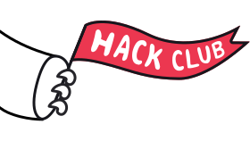

Kunal Kumar · Bengaluru, India
I build systems
that refuse
to invent.
Computer Science, class of 2028. Frontend Engineering Intern at Emergent (YC S24). Through to round 2 at MATS, working on AI safety.
Hack Club
into 35 projects
last 12 months
built and shipped
What I am chasing
One question sits under everything I build: when a capable model proposes something, what is allowed to believe it?
Not “is the model accurate”. Accuracy is measured afterwards. What decides whether a system is safe to deploy is structural: what the model is architecturally permitted to cause.
I am through to round 2 at MATS, and I was selected as an Activate AI Fellow, India's first cohort, one of 15 from over 500 applicants. I read alignment work the way other people read the news.
Three of the things I had already built turned out to be about exactly this, and I only noticed afterwards.
ATTEST gives its advisor names and dates but never an amount. Support Triage lets the model speak once, inside a sealed block, and a policy validator decides. Watershed is the other half of the question: trained over 100k self-play episodes, the agents stopped competing and alliances formed on their own.
ATTEST
₹0.00 moved against the wrong account across 500 held-out settlements. 82.4% correctly refused.
Support Triage
132 of 132 evaluation tests pass. Two runs on the same input hash identically.
Watershed
GRPO over 100k+ self-play episodes with trust and coalition dynamics in the reward.
Social impact
Before any of the AI work, two years of making things happen for other people.

Growth & Ops Lead · 16 monthsAt Hack Club I ran regional technical infrastructure and operational logistics for Campfire, Daydream and CodeDay Bengaluru, reaching 1,500 students.
“Growth and Ops” is a generous title for the work. At a large event nobody remembers the talks. They remember whether the wifi held, whether there was food at 11pm, and whether the person who turned up alone found somebody to build with.
At that scale every failure is one you did not plan for. So you stop trying to prevent failure and start designing the degradation: what still works, and who finds out first. Every system in my portfolio has a documented failure mode, and that habit came from a wifi outage rather than a textbook.
Teaching Assistant · 50+ students
A semester of Data Structures and Algorithms, in doubt-resolution and concept-clarification sessions.
The first explanation is the one you already have. The second is the one you prepared. The third is the one you build live, out of whatever the student just told you they do understand, and it is the only one that ever works.
It changed how I write. Every README I ship opens by naming what the software does not do, because people can only hold a new idea once they know its edges.
Today I am Operations Lead of the Open Source Club and Head of Immersions for Aspirants Relations.
Rooms I do not belong in
Selected delegate · 2026
The Harvard Project for Asian and International Relations put me in rooms with people from completely unrelated fields, arguing about things I had no technical claim on.
Every project I have built started as a problem I could name in one sentence: a lump sum that cannot be decomposed, a train of thought you cannot get back, a July where everything lived in working memory and the result was fog.
I am fairly sure that habit came from that room rather than from any codebase.
Strangers grade my code
The only work I could not grade in my own favour. 29 patches merged into 35 repositories, with 12 approvals from 10 different maintainers across 7 organisations.
I spread deliberately across ecosystems that share nothing: a children's music environment, a Bitcoin Lightning wallet, the OpenStreetMap editor, Django's own website, scientific data QC, and the Fortran standard library. Four languages, six review cultures.
Almost none of it is features. It is a widget that could deadlock, an error contract that broke its own promise, a hand-rolled parser, and a licensing trap for mapmakers. This is maintenance work, and it is what decides whether software still runs in five years.
Fortran is the one I would point at. I had no reason to know it. Numerical scientists maintain stdlib to a standard where every patch is read very carefully, and my instincts from JavaScript were worth nothing there. Landing something meant learning how that community argues about correctness before writing a line.
That is the skill I was really practising: arriving somewhere I have no standing and becoming useful anyway.
What I build
Five projects, one idea, arrived at five separate times before I noticed it had become a thesis.
Recall
A memory engine for unfinished work
You do not lose files. You lose continuity. Press Ctrl + Space, type half a thought, and the moment, the session and the topic all come back at once. No model in the production path, so the same question can never return two different pasts.

ATTEST
Money that moves only on proof
More than one set of orders can add up to the same credit exactly, and those sets discharge different customers. So ATTEST refuses: 82.4% of settlements correctly held, and ₹0.00 moved against the wrong account.

Minutes
A meeting workspace, rebuilt
A meeting product is not its landing page. It is what happens on the fourth day, when you half-remember a commitment and need to find it. Everything except the speech-to-text actually works, and the README says so before a reviewer can discover it.

PDFChat
Cites its pages, or refuses
A confident wrong answer costs more than no answer. Every response either cites the pages it came from or refuses clearly, and it answers in your language while still treating the document as the sole evidence.

My portfolio site
Hand-written, no framework, no build step
One HTML file, one script, a command palette, live GitHub and clock feeds, and real deployment screenshots captured at 1280×800. No mockups anywhere on it.